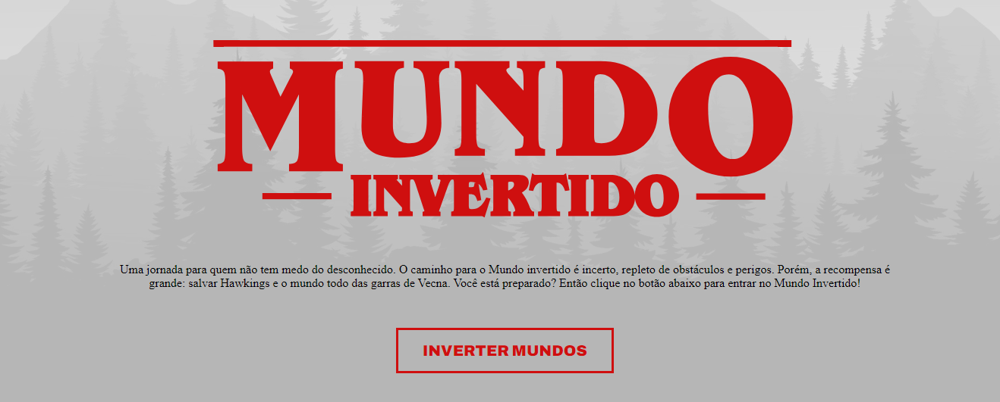
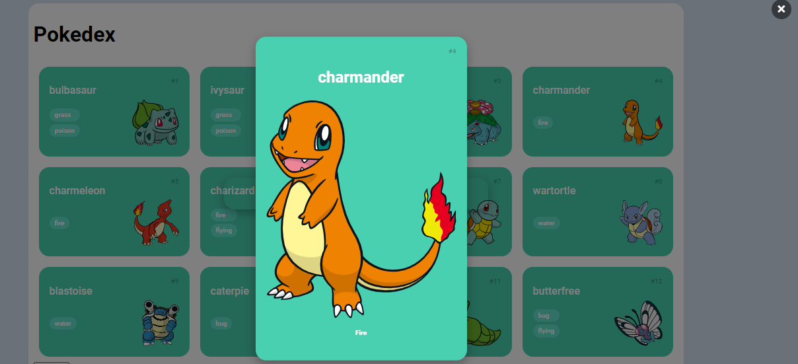

Construindo uma Landing Page no Mundo Invertido com HTML e CSS
Projeto desenvolvido para exibir algumas informaçoes sobre a serie Stranger Strings, com mudança de elementos por meio do DOM.
Multiverso Spider-Man: Criando um Site com HTML, CSS e JavaScript
Projeto desenvolvido para exibir informações sobre os filmes do Spider-Man, com manipulação por meio do DOM.

Construindo uma Pokédex com JavaScript
Projeto desenvolvido para exibir informações sobre Pokemons, com integração com API.